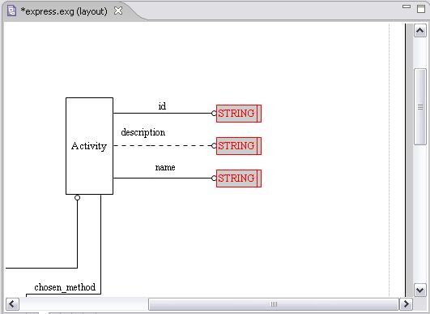

The objects are arranged according to the top object left side
(see Figure
2). Also you can justify according the center or the right side of
the top object by selecting the particular context menu item.

Figure
2. Objects are arranged
according to the left side of the top object